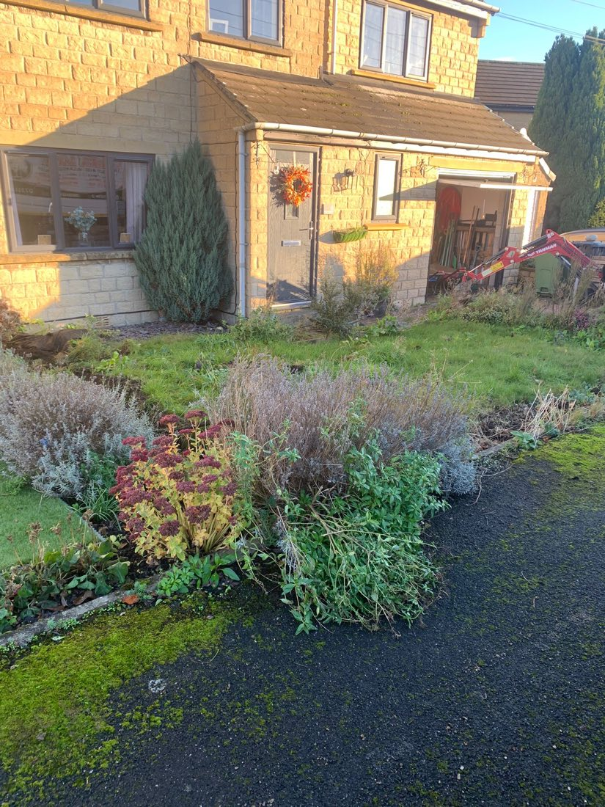
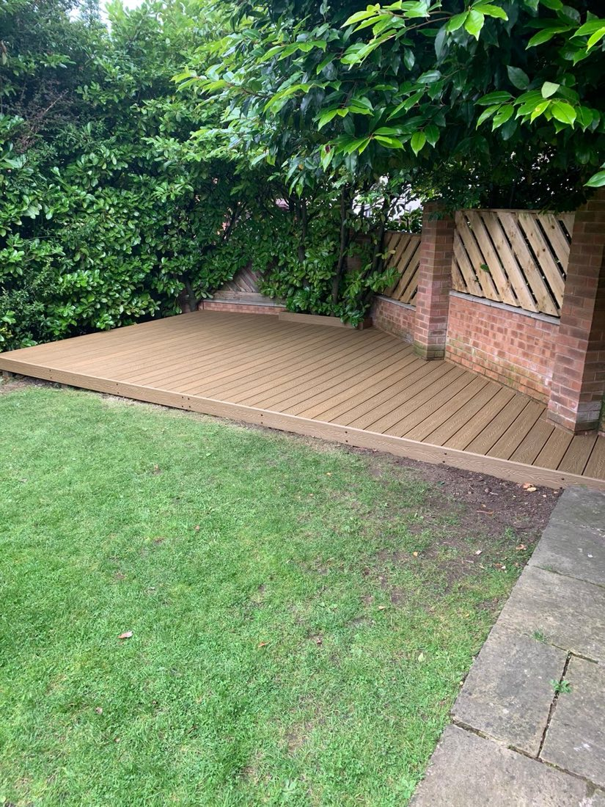
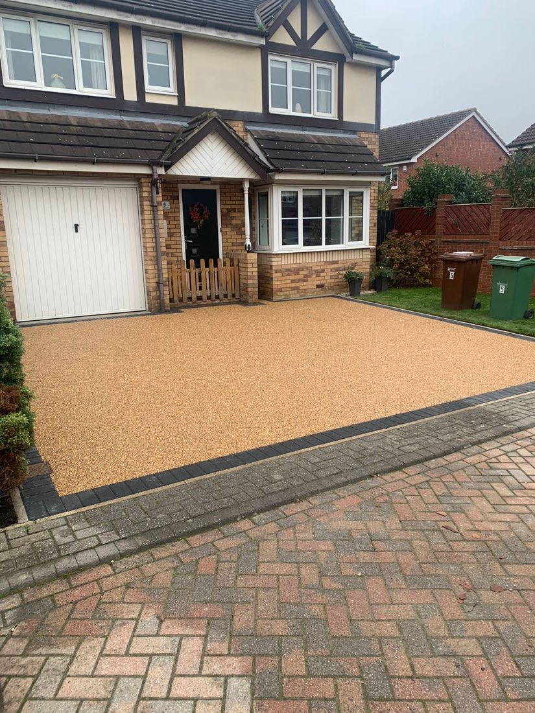
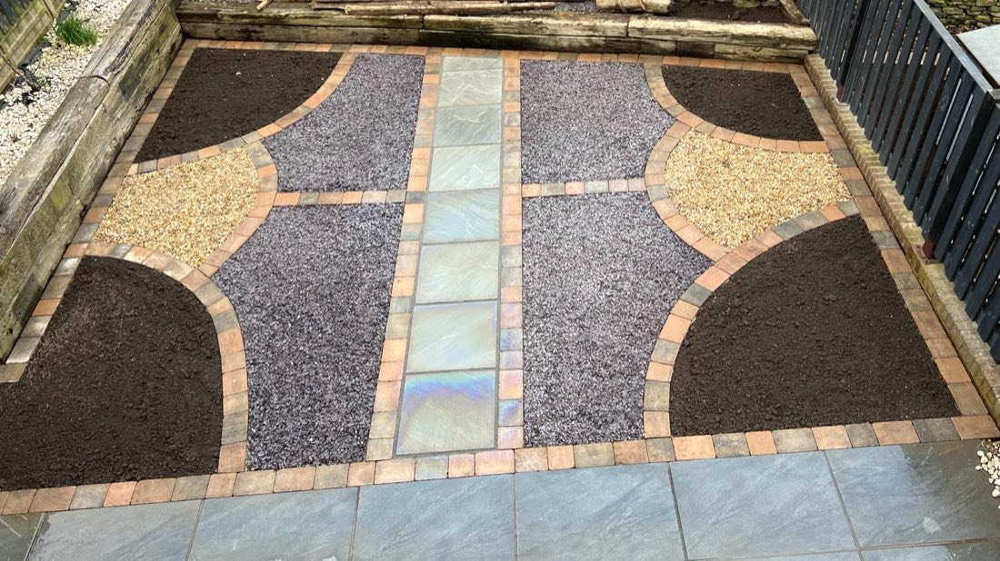
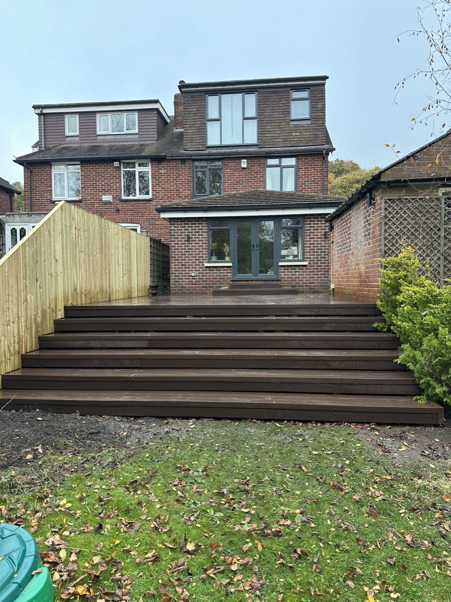
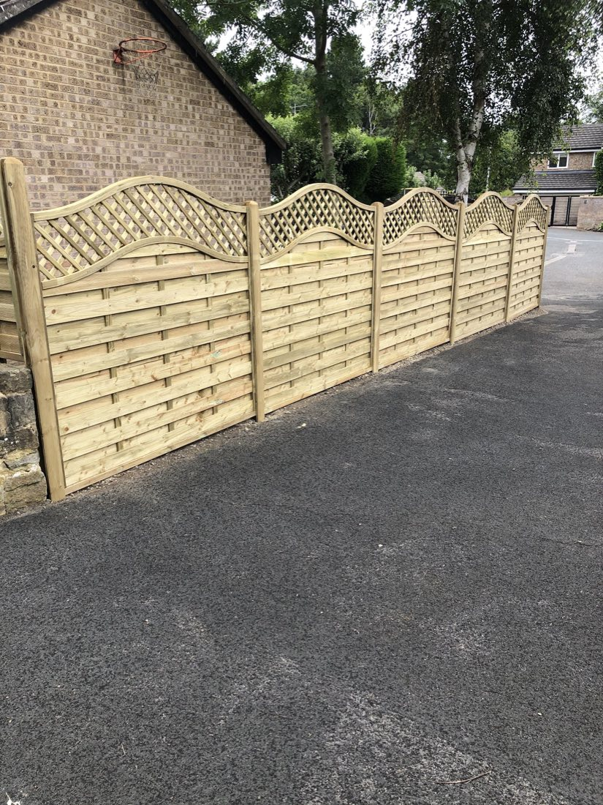
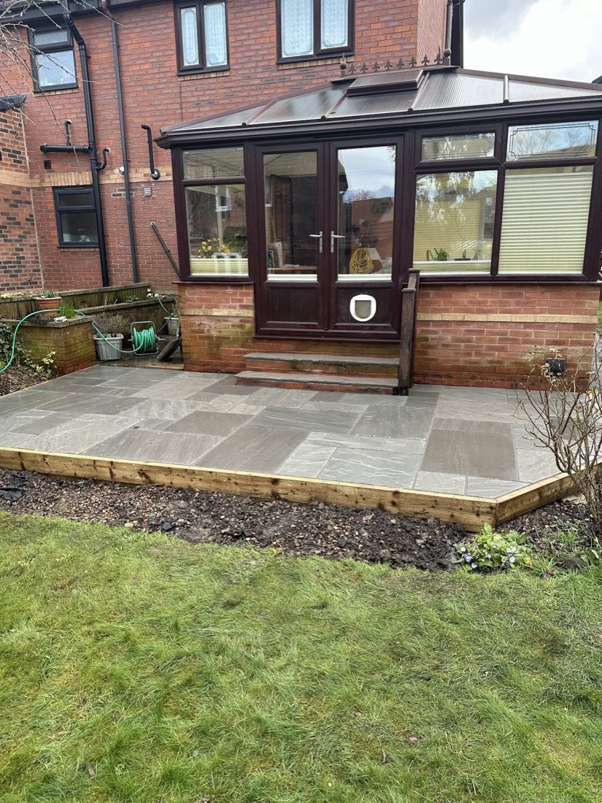

Tree Surgery
Reducing, reshaping and removing overgrown trees, Leylandii and conifers — tidied and cleared away.
Green Acre is a family-run tree surgery and landscaping team working across Leeds since 2012 — decking, patios, fencing, driveways and full garden transformations, done to a genuinely high standard.
What We Do
One team for the lot — no subcontractors, no upselling you a job you didn't ask for.
Reducing, reshaping and removing overgrown trees, Leylandii and conifers — tidied and cleared away.
Full garden transformations — planned around what you actually want, then built properly to last.
Timber and composite decking, Indian stone and paving — levelled, laid and finished neatly.
New fences, gates and gravel paths built to a high standard — professional, tidy and hard-wearing.
Resin-bound driveways, bases and hard landscaping — clean lines and a finish that lasts.
Turfing, artificial grass, shed bases and the upkeep that keeps a finished garden looking its best.

About Green Acre
I'm Sonny — Green Acre has been doing tree surgery and landscaping across Leeds since 2012. You deal directly with me and a small, settled team, not a call centre or a chain of subcontractors.
Our Work
Decking, patios, fencing, driveways and full transformations — all our own work.






In Their Own Words
A few of the 36 verified reviews on Checkatrade.
★★★★★Resin flooring installed in back garden
"From the beginning, Sonny's communication was excellent — he listened and clearly explained everything. Punctuality and reliability were excellent and the work was of the highest standard. His team worked tirelessly, even through some crazily hot weather. With children and a dog, everything was safe and tidy the whole time."
— Brad Y, Leeds (LS15) · Checkatrade
★★★★★Decking, child-proofing & levelling
"I had a lot of quotes for this job. Sonny was the only tradesperson that actually listened to what I wanted — no trying to upsell a grand design. The team turned up on time, problem-solved on the spot and always left the garden immaculate. Finished ahead of schedule and it's fantastic."
— Stephanie S, Leeds (LS28) · Checkatrade
★★★★★Reducing overgrown conifers
"Excellent service from initial quote to completed job. A fair price, arrived on time and talked through the options. Good communication throughout, a very thorough job and cleared away too."
— Jordan B, Bradford (BD7) · Checkatrade
★★★★★Complete garden transformation
"Incredibly happy with our garden and the work carried out by Green Acre. Very hard working, made sure everything was left tidy every day. The final result is completely transformed — couldn't recommend enough."
— Verified reviewer, Bradford (BD13) · Checkatrade
9.9 / 10 across 36 reviews on Checkatrade
Read all 36 reviews on Checkatrade →Good to Know
Anything else, just ask through Checkatrade or MyBuilder — happy to talk it through first.
Get a Free QuoteNo — quotes are free and no-obligation. We come out, look at the job, talk through options and give you a fair, honest price.
Leeds and across West Yorkshire. Our reviews come from customers around Leeds, Bradford and further afield — if you're in the area, just ask.
Not at all — everything from a single overgrown tree or a bit of fencing to a full garden transformation. We won't push you into a bigger job than you need.
Always. Customers regularly mention that we leave the site immaculate and safe every day — especially important around children and pets.
Message Green Acre through Checkatrade or MyBuilder and Sonny will get back to you to arrange a look at the job.
Where We Work
Get In Touch
Green Acre doesn't list a public phone or email — the quickest way to reach Sonny is through one of the verified profiles below.
Built as a free, ready-to-launch sample for Green Acre — it can go live on your own domain, with your branding and any changes you'd like, whenever you're ready.